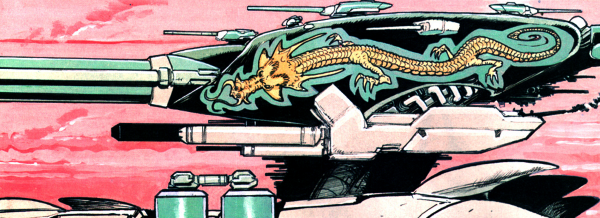

A bit like the plot of Seven Samurai except there are only two of them and they're controlling a massive, multi-turreted tank.
Art by Henry Flint
| Story Title | Parts | Pages | w indicates a wraparound coverCovers | Year(s) | Issues | Writer | Artist | Colourist | Letterer |
|---|---|---|---|---|---|---|---|---|---|
| Tanked | 1 | 10 | 0 | 1998 | 1112 | Dan Abnett | Henry Flint | <-- | Ellie de Ville |
| Mojo Working | 1 | 5 | 0 | 1998 | 1113 | Dan Abnett | Henry Flint | <-- | Ellie de Ville |
| Tank Tracks | 1 | 5 | 0 | 1998 | 1114 | Dan Abnett | Henry Flint | <-- | Ellie de Ville |
| Swear Box | 1 | 5 | 0 | 1998 | 1115 | Dan Abnett | Henry Flint | <-- | Ellie de Ville |
| Tanks for the Memory | 3 | 15 | 0 | 1998 | 1116-1118 | Dan Abnett | Henry Flint | <-- | Ellie de Ville |
| Worms | 2 | 10 | 1120: Henry Flint 1 | 1998 | 1119-1120 | Dan Abnett | Henry Flint | <-- | Ellie de Ville |
| Enemy Mine | 1 | 5 | 0 | 1998 | 1121 | Dan Abnett | Henry Flint | <-- | Ellie de Ville |
| War of the Worms | 2 | 20 | 0 | 1998 | 1122-1123 | Dan Abnett | Henry Flint | <-- | Ellie de Ville |
| year | episodes | pages |
| 1988 | 0 | 0 |
| 1989 | 0 | 0 |
| 1990 | 0 | 0 |
| 1991 | 0 | 0 |
| 1992 | 0 | 0 |
| 1993 | 0 | 0 |
| 1994 | 0 | 0 |
| 1995 | 0 | 0 |
| 1996 | 0 | 0 |
| 1997 | 0 | 0 |
| 1998 | 12 | 75 |
| 1999 | 0 | 0 |
| 2000 | 0 | 0 |
| 2001 | 0 | 0 |
| 2002 | 0 | 0 |
| 2003 | 0 | 0 |
| 2004 | 0 | 0 |
| 2005 | 0 | 0 |
| 2006 | 0 | 0 |
| 2007 | 0 | 0 |
| 2008 | 0 | 0 |